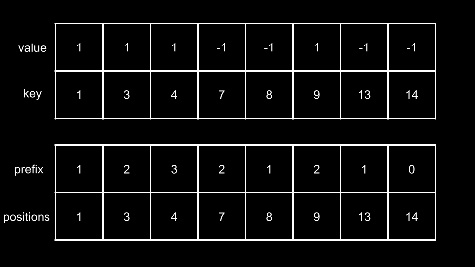
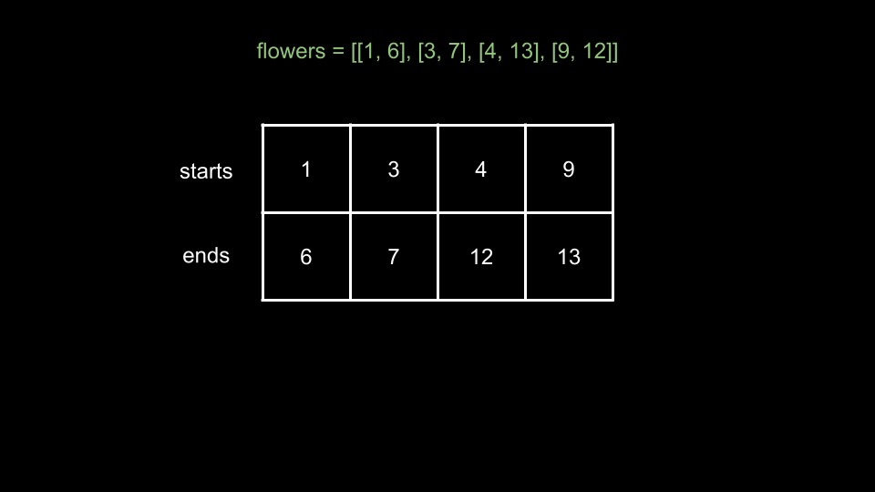

Intuition
For each person in people, we need to find how many flower ranges [start, end]
contain person. An intuitive first step is to sort both input arrays so that we can process both flowers
and people in chronological order.
For the first person (in terms of arrival time), we can find all the flowers that have
start less than person - these are the flowers that have started blooming before person
arrived, and thus person might have a chance of seeing them. Of those flowers, we remove the ones that
have end less than person as well, as these are the flowers that have finished blooming,
and person missed them. The number of remaining flowers is the answer for the first person.
Note that because we sorted people, the flowers we remove here are guaranteed never to be seen again
and therefore will not affect anyone else after person.
Let's move to the second person. Once again, we find all the flowers that have start less
than person. But do we need to start from scratch? No! Because we are processing both the
flowers and people in order, we can start from where we left off with the previous person.
More specifically, because the second person's arrival time is greater than or equal to the previous person's, the
flowers that bloom before the previous person must also bloom before the second person, so there's no need for us to
handle this portion of flowers again. Therefore, we will add all the flowers that have start less than
the second person, starting after the last flower we took.
Similarly, the flowers that the previous person missed are definitely also missed by the second person, so there's no
need for us to handle this portion of removed flowers again. Once we have taken all the flowers with
start less than person, we can simply remove all the flowers that have end
less than person. The number of remaining flowers is the answer for the second person.
We can continue this process for each person. To find the flowers with start less than a
given person, we can use a pointer i that starts at 0. We will move
i along the flowers array and never decrement or reset it. This allows us to pick up where
we left off for each successive person.
How can we remove the flowers that have end less than a given person? This one is trickier
because we can only sort flowers by one dimension. To use the pointer technique we just described, we
must sort by the start times. Thus, the end times are not necessarily in order. For
example, you could have flowers like this:
[2, 9], [3, 6]
In this case, using another pointer like j for the end times would not work since 9 is
greater than 6 but comes earlier in the input.
As we are concerned with the flowers that have earlier end times, we can use a heap/priority queue to keep track of
which flowers finish blooming. We will maintain a min heap and push end times of flowers
onto this heap. Once we have added all flowers with start less than person,
we will pop from the heap as long as the top of it is less than person.
After popping from heap, it will hold the end times of all flowers that person can see.
Thus, the answer for person is simply the size of the heap.
To summarize, we use a pointer
ito iterate alongflowers. For a givenperson, we find all the flowers that started blooming beforepersonarrives. We push theendtime of these flowers onto aheap. We can then remove all the flowers that finished blooming by popping from theheap, since a minheapefficiently gives us the minimum (earliest) times.As we sort both input arrays, flowers that we pop from
heapwill never be seen again by future people.
A note on implementation: here, we are sorting people, but the problem description asks us for the
answer according to the original order. We will use a hash map that maps a person to the number of
flowers they see. We will also keep the original order of people by creating a copy of it to sort. Once
we have calculated the answer for everyone in the sorted order, we can iterate through the original
people and refer to the hash map to build the final answer by restoring their original order.
Algorithm
flowers. Create a sorted version of people called sortedPeople.dic, a min heap, and an integer i = 0.sortedPeople. For each person:
flowers[i][0] < person (the flower at i already started blooming),
push flowers[i][1] (when the flower finishes blooming) to heap and increment
i.
heap (minimum element) is less than person, pop from heap.
dic[person] to the size of heap.ans. Iterate over people and populate ans using
dic.
Implementation
Java
class Solution {
public int[] fullBloomFlowers(int[][] flowers, int[] people) {
int[] sortedPeople = Arrays.copyOf(people, people.length);
Arrays.sort(sortedPeople);
Arrays.sort(flowers, (a, b) -> Arrays.compare(a, b));
Map dic = new HashMap();
PriorityQueue heap = new PriorityQueue();
int i = 0;
for (int person : sortedPeople) {
while (i < flowers.length && flowers[i][0] <= person) {
heap.add(flowers[i][1]);
i++;
}
while (!heap.isEmpty() && heap.peek() < person) {
heap.remove();
}
dic.put(person, heap.size());
}
int[] ans = new int[people.length];
for (int j = 0; j < people.length; j++) {
ans[j] = dic.get(people[j]);
}
return ans;
}
}
C++
class Solution {
public:
vector fullBloomFlowers(vector>& flowers, vector& people) {
vector sortedPeople(people.begin(), people.end());
sort(sortedPeople.begin(), sortedPeople.end());
sort(flowers.begin(), flowers.end());
unordered_map dic;
priority_queue, greater> heap;
int i = 0;
for (int person : sortedPeople) {
while (i < flowers.size() && flowers[i][0] <= person) {
heap.push(flowers[i][1]);
i++;
}
while (!heap.empty() && heap.top() < person) {
heap.pop();
}
dic[person] = heap.size();
}
vector ans;
for (int person : people) {
ans.push_back(dic[person]);
}
return ans;
}
};
Python3
class Solution:
def fullBloomFlowers(self, flowers: List[List[int]], people: List[int]) -> List[int]:
flowers.sort()
sorted_people = sorted(people)
dic = {}
heap = []
i = 0
for person in sorted_people:
while i < len(flowers) and flowers[i][0] <= person:
heapq.heappush(heap, flowers[i][1])
i += 1
while heap and heap[0] < person:
heapq.heappop(heap)
dic[person] = len(heap)
return [dic[x] for x in people]
Complexity Analysis
Given nn
as the length of flowers and mm as the length of people,
Time complexity: O(n⋅logn+m⋅(logn+logm))O(n \cdot \log{}n + m \cdot (\log{}n + \log{}m))
We start by sorting both flowers and people. This costs O(n⋅logn)O(n \cdot \log{}n) and O(m⋅logm)O(m \cdot \log{}m) respectively. Next, we perform O(m)O(m) iterations. At
each iteration, we perform some heap operations. The cost of these operations is dependent on the size of
the heap. Our heap cannot exceed a size of nn,
so these operations cost O(logn)O(\log{}n).
There are some other linear time operations that don't affect our time complexity. In total, our time complexity is O(n⋅logn+m⋅(logn+logm))O(n \cdot \log{}n + m \cdot (\log{}n + \log{}m)).
Space complexity: O(n+m)O(n + m)
We create an array sortedPeople of length mm.
dic also grows to a length of mm,
and heap can grow to a size of O(n)O(n).
Intuition
There is a technique called difference array that can be used to solve many "range" based problems. The technique
involves creating an array difference and iterating over all ranges [start, end]. We
perform difference[start]++ and difference[end + 1]-- for each range.
The idea is that each index of difference represents the change in the number of
flowers we can see when we cross this index (not the actual number of flowers on this index), with each index
representing a unit of time. Thus, we could take a prefix sum of this difference array to
find how many flowers can be seen at any given time with prefix[time].
Some people also call this technique "line sweep".
Unfortunately, if we look at the constraints, we find that values of start, end, people can be up to
10910^9.
It would not be feasible to create an array with such a large size. Thus, we need to use a map structure instead.
Like in the previous approach, we still want to process everything chronologically. We will use the following data
structures:
TreeMap.std::map.sortedcontainers.SortedDict.Note that if you were not allowed to use these structures in an interview, you could still implement this approach using a normal hash map. You would just need to sort the elements in the hash map by key values after you populated it.
Once we have this data structure difference, we will follow the process described above. We iterate over
each flower = [start, end] and increment difference[start] while decrementing difference[end
+ 1]. The idea is that when we reach start, the number of flowers we see increases by one.
When we reach end + 1, the number of flowers we see decreases by one.
We then create a prefix sum of the values in difference. We also need to know what time
each value is associated with, so we will create an array positions to go along with our
prefix array. Here, prefix[i] is the number of flowers available at time positions[i].
Finally, we can iterate over people and find the answer for each person. How do we do this?
We can perform a binary search over positions to find the index i where
person fits. prefix[i] is the answer for this person.
Let's summarize the algorithm with an example:
Our first step is to populate difference. Each key, value pair in difference
represents "at time key, we see a change in value new flowers". For example, the key value
pair of 6: -2 means that at time 6, we see two less flowers.
Next, we create a prefix sum on the values of difference, as well as an array positions to
associate each prefix value with a position in time. Notice that positions is just the
keys of difference.

With these arrays, we can now use binary search to identify how many flowers a given person will see.
For example, consider person at time 7:
What about person at time 11?
There are a few more things to consider before we start implementation.
person that arrives before any flower blooms? This may confuse our
binary search since the minimum value in positions will be greater than person. We
will initialize difference with 0: 0 to represent at time 0, we don't see
any new flowers.
11
into the given positions array will put it at index 6. However, we need index
5. Thus, we need the insertion index minus one. What if the value exists in positions,
as is the case with person = 7? To offset the minus one, we will binary search for the rightmost
insertion index (bisect_right in Python, upper_bound in C++).
Algorithm
difference with 0: 0.flower = [start, end] in flowers:
difference[start].difference[end + 1].positions and prefix. Iterate over the keys of
difference:
positions contains all the keys in the order they are traversed.prefix contains the prefix sum of the corresponding values.ans. Iterate over each person in people:
positions with person.i as the result of this binary search minus one.prefix[i] to ans.ans.Implementation
Java
class Solution {
public int[] fullBloomFlowers(int[][] flowers, int[] people) {
TreeMap difference = new TreeMap<>();
difference.put(0, 0);
for (int[] flower : flowers) {
int start = flower[0];
int end = flower[1] + 1;
difference.put(start, difference.getOrDefault(start, 0) + 1);
difference.put(end, difference.getOrDefault(end, 0) - 1);
}
List positions = new ArrayList();
List prefix = new ArrayList();
int curr = 0;
for (int key : difference.keySet()) {
positions.add(key);
curr += difference.get(key);
prefix.add(curr);
}
int[] ans = new int[people.length];
for (int j = 0; j < people.length; j++) {
int i = binarySearch(positions, people[j]) - 1;
ans[j] = prefix.get(i);
}
return ans;
}
public int binarySearch(List arr, int target) {
int left = 0;
int right = arr.size();
while (left < right) {
int mid = (left + right) / 2;
if (target < arr.get(mid)) {
right = mid;
} else {
left = mid + 1;
}
}
return left;
}
}
C++
class Solution {
public:
vector fullBloomFlowers(vector>& flowers, vector& people) {
map difference;
difference[0] = 0;
for (vector& flower : flowers) {
difference[flower[0]]++;
difference[flower[1] + 1]--;
}
vector positions;
vector prefix;
int curr = 0;
for (auto& pair : difference) {
positions.push_back(pair.first);
curr += pair.second;
prefix.push_back(curr);
}
vector ans;
for (int person : people) {
int i = upper_bound(positions.begin(), positions.end(), person) - positions.begin() - 1;
ans.push_back(prefix[i]);
}
return ans;
}
};
Python3
from sortedcontainers import SortedDict
class Solution:
def fullBloomFlowers(self, flowers: List[List[int]], people: List[int]) -> List[int]:
difference = SortedDict({0: 0})
for start, end in flowers:
difference[start] = difference.get(start, 0) + 1
difference[end + 1] = difference.get(end + 1, 0) - 1
positions = []
prefix = []
curr = 0
for key, val in difference.items():
positions.append(key)
curr += val
prefix.append(curr)
ans = []
for person in people:
i = bisect_right(positions, person) - 1
ans.append(prefix[i])
return ans
Complexity Analysis
Given nn
as the length of flowers and mm as the length of people,
Time complexity: O((n+m)⋅logn)O((n + m) \cdot \log{n})
Our first loop sets difference, which costs O(n⋅logn)O(n \cdot \log{}n).
Next, we calculate the prefix sum, which will cost either O(n)O(n)
or O(n⋅logn)O(n \cdot \log{}n) depending on your language's implementation.
This is because difference will have a size between nn and 2n2n.
Finally, we have a loop over people. We perform a binary search that costs O(logn)O(\log{}n) at each iteration. Thus, we spend m⋅lognm \cdot \log{}n here.
This gives us a final time complexity of O((n+m)⋅logn)O((n + m) \cdot \log{n})
Space complexity: O(n)O(n)
difference has a size of O(n)O(n).
prefix and positions have the same size as difference.
Intuition
In the previous approach, we used the concept of a difference array/line sweep to calculate how many flowers are seen
at a given time. For each flower = [start, end], we indicated that at time start, we see
one more flower, and at time end + 1, we see one less flower. We identified when a flower started
blooming and when it finished blooming.
The idea behind this strategy is that at any given time, the number of flowers we see is the number of flowers that have already started blooming minus the amount of flowers have finished blooming.
Is there a simpler way to identify at a given time, how many flowers have started blooming, and how many flowers have
finished blooming? In the first two approaches, we always associate the start and end of
the same flower together for processing, which is more intuitive but can be more complex to handle. What if we
separately consider these two sets of times?
We can simply collect all start points in one array starts, sort it, and then perform a
binary search. We can do the exact same thing with another array ends for all end points.
Take a look at the following example:

Here, we have collected all start and end times and then sorted them. How many flowers can
somebody at time 11 see?
As you can see, 4 flowers have started blooming and 2 flowers have finished blooming. Thus,
4 - 2 = 2 flowers can be seen at time 11. Because starts and
ends is sorted, we can use binary search to quickly identify how many flowers have started and finished
blooming for any given time.
Regarding the binary searches: when binary searching on starts, we want to search for the rightmost
insertion index. This is because if a person arrives at the same time as a flower starts blooming, we
want to include this flower.
Note that a flower = [start, end] stops blooming at end + 1, not end. There
are two ways we can handle this. We can either binary search on end for the leftmost insertion index
(since we want to include all flowers with end equal to the current time), or we can assemble ends
using end + 1 for each flower. We will implement the algorithm using the second option in
this article.
Algorithm
starts and ends.flower = [start, end] in flowers:
start to starts.end + 1 to ends.starts and ends.ans and iterate over each person in people:
starts for the rightmost insertion index of person
to find i.
ends for the rightmost insertion index of person to
find j.
i - j to ans.ans.Implementation
Java
class Solution {
public int[] fullBloomFlowers(int[][] flowers, int[] people) {
List starts = new ArrayList();
List ends = new ArrayList();
for (int[] flower: flowers) {
starts.add(flower[0]);
ends.add(flower[1] + 1);
}
Collections.sort(starts);
Collections.sort(ends);
int[] ans = new int[people.length];
for (int index = 0; index < people.length; index++) {
int person = people[index];
int i = binarySearch(starts, person);
int j = binarySearch(ends, person);
ans[index] = i - j;
}
return ans;
}
public int binarySearch(List arr, int target) {
int left = 0;
int right = arr.size();
while (left < right) {
int mid = (left + right) / 2;
if (target < arr.get(mid)) {
right = mid;
} else {
left = mid + 1;
}
}
return left;
}
}
C++
class Solution {
public:
vector fullBloomFlowers(vector>& flowers, vector& people) {
vector starts;
vector ends;
for (vector& flower : flowers) {
starts.push_back(flower[0]);
ends.push_back(flower[1] + 1);
}
sort(starts.begin(), starts.end());
sort(ends.begin(), ends.end());
vector ans;
for (int person : people) {
int i = upper_bound(starts.begin(), starts.end(), person) - starts.begin();
int j = upper_bound(ends.begin(), ends.end(), person) - ends.begin();
ans.push_back(i - j);
}
return ans;
}
};
Python3
class Solution:
def fullBloomFlowers(self, flowers: List[List[int]], people: List[int]) -> List[int]:
starts = []
ends = []
for start, end in flowers:
starts.append(start)
ends.append(end + 1)
starts.sort()
ends.sort()
ans = []
for person in people:
i = bisect_right(starts, person)
j = bisect_right(ends, person)
ans.append(i - j)
return ans
Complexity Analysis
Given nn
as the length of flowers and mm as the length of people,
Time complexity: O((n+m)⋅logn)O((n + m) \cdot \log{n})
We first create two arrays of length nn, starts and ends,
then sort them. This costs O(n⋅logn)O(n \cdot \log{}n).
Next, we iterate over people and perform two binary searches at each iteration. This costs O(m⋅logn)O(m \cdot \log{}n).
Thus, our time complexity is O((n+m)⋅logn)O((n + m) \cdot \log{n}).
Space complexity: O(n)O(n)
starts and ends both have a size of n.